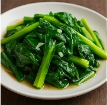

Garlic Stir-Fried Greens (蒜蓉小白菜)
Home

Ingredients
1 lb bok choy or gai lan
3 garlic cloves
1 tbsp oil
Salt to taste
Instructions
Blanch greens briefly.
Sauté garlic in oil.
Stir-fry with greens and salt.
Other Recipes You Might Like
Kung Pao Chicken
Pork and Chive Dumplings
Soy Milk